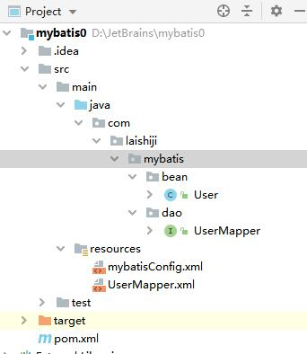

概述
mybatis是基于Java的半自动化持久层框架，内部封装了JDBC。开发者只需要关注sql语句本身（在配置文件或注解中编写，sql与java编码分离，一个专注数据，一个专注业务），而不需要花费精力去处理加载驱动、创建连接、创建statement等繁杂的过程。
MybatisHelloWorld
工程文件结构如图

创建Maven工程，配置pom.xml，插入：
1
2
3
4
5
6
7
8
9
10
11
12
13
14
15
16
17
18
19
20<dependencies>
<dependency>
<groupId>mysql</groupId>
<artifactId>mysql-connector-java</artifactId>
<version>5.1.48</version>
</dependency>
<dependency>
<groupId>org.mybatis</groupId>
<artifactId>mybatis</artifactId>
<version>3.5.4</version>
</dependency>
<dependency>
<groupId>junit</groupId>
<artifactId>junit</artifactId>
<version>4.12</version>
</dependency>
</dependencies>创建实体类和DAO接口
实体类
1
2
3
4
5
6
7public class User {
private Integer id;//包装类默认为null
private String lastName;
private String email;
private String gender;
//getters and setters, toString...
}DAO接口
1
2
3public interface IUserMapper {
public User getUserById(Integer id);
}
创建sql映射文件：
UserMapper.xml1
2
3
4
5
6
7
8
9
10
11
12
13
<!-- sql映射文件：保存了每一个sql语句的映射信息-->
<mapper namespace="com.laishiji.mybatis.dao.IUserMapper"> <!--名称空间指定DAO接口的全类名 -->
<!-- id指定DAO接口的抽象方法名，返回类型为实体类的全类名-->
<select id="getUserById" resultType="com.laishiji.mybatis.bean.User">
select id, last_name lastName, gender,email from user where id = #{id}
</select>
</mapper>也可通过注解来完成映射：
1
2
3
4public interface IUserMapper {
("select id, last_name lastName, gender,email from user where id = #{id}")
public User getUserById(Integer id);
}创建mybatis全局配置文件，配置数据连接池信息，mapper信息等：
mybatisConfig.xml1
2
3
4
5
6
7
8
9
10
11
12
13
14
15
16
17
18
19
20
21
22
23
24
25
26
27
28
29
30
31
<!-- mybatis全局配置文件：包含数据库连接池信息，事务管理器信息等-->
<configuration>
<environments default="development">
<environment id="development">
<transactionManager type="JDBC"/>
<dataSource type="POOLED">
<property name="driver" value="com.mysql.jdbc.Driver"/>
<property name="url" value="jdbc:mysql://localhost:3306/mybatis"/>
<property name="username" value="root"/>
<property name="password" value="admin"/>
</dataSource>
</environment>
</environments>
<mappers>
<mapper resource="UserMapper.xml"/>
</mappers>
</configuration>mysql中建表
1
2
3
4
5
6
7
8
9
10
11
12
13drop database if exists mybatis;
create database mybatis default character set utf8;
create table user(
id int(11) primary key auto_increment,
last_name varchar(255),
gender char(1),
email varchar(255)
)engine=innodb default charset=utf8;
insert into user(id,last_name,gender,email) values (1,'Tom','男','123@qq.com'),
(2,'Jim','男','234@qq.com'),
(3,'Lisa','女','324@qq.com');创建测试类
1
2
3
4
5
6
7
8
9
10
11
12
13
14
15
16
17
18
19
20
21
22
23
24
25
26
27
28
29
30
31
32
33
34
35
36
37
38
39
40
41
42
43
44
45
46
47
48
49
50
51
52
53
54
55
56
57
58package com.laishiji.mybatis;
import com.laishiji.mybatis.bean.User;
import com.laishiji.mybatis.dao.IUserMapper;
import org.apache.ibatis.io.Resources;
import org.apache.ibatis.session.SqlSession;
import org.apache.ibatis.session.SqlSessionFactory;
import org.apache.ibatis.session.SqlSessionFactoryBuilder;
import org.junit.Test;
import java.io.IOException;
import java.io.InputStream;
/**
* SqlSession代表和数据库的一次会话，用完必须关闭；
* SqlSession和Connection一样都是非线程安全的，因此不要写作类的成员变量；
* dao接口没有实现类，但是mybatis会为这个接口生成一个代理对象。
*/
public class MybatisTest {
public void test() throws IOException {
String resource = "mybatisConfig.xml";
InputStream inputStream = Resources.getResourceAsStream(resource);
SqlSessionFactory sqlSessionFactory = new SqlSessionFactoryBuilder().build(inputStream);
SqlSession session = sqlSessionFactory.openSession();
User user = session.selectOne("com.laishiji.mybatis.dao.IUserMapper.getUserById",1);
System.out.println(user);
session.close();
}
/**
* 接口式编程：
* 原生：IUserDao接口 ---> IUserDaoImpl实现类
* mybatis：IUserMapper接口 ---> IUserMapper.xml
* @throws IOException
*/
public void test2() throws IOException {
String resource = "mybatisConfig.xml";
InputStream inputStream = Resources.getResourceAsStream(resource);
SqlSessionFactory sqlSessionFactory = new SqlSessionFactoryBuilder().build(inputStream);
SqlSession openSession = sqlSessionFactory.openSession();
//通过反射+动态代理获取接口的实现类对象
IUserMapper userMapper = openSession.getMapper(IUserMapper.class);
User user = userMapper.getUserById(1);
System.out.println(user);
openSession.close();
}
}